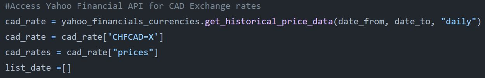

Data Scraping with Selenium, BeautifulSoup and YahooFinancial API
#Python #Crawler #Selenium #BeautifulSoup #API #Pandas #Automation

Data Scraping with Selenium, BeautifulSoup and YahooFinancial API
#Python #Crawler #Selenium #BeautifulSoup #API #Pandas #Automation
I build a web scraper to scrape data from various publicly available webpages. The data I was interested in were daily prices of investment vehicles. The data was spread over 13 different websites and included over around 300 investment vehicles. In This project description I describe how I build the scraper and how I solved problems. Part of the code can be found in this Github Repository.
As described I scraped diverse webpages. Here I described how I scraped the Websites of Credit Suisse, SwissFundData and UBS.
For the data coming from the Credit Suisse Webpage. I needed the data corrected with a specific exchange rate. I scraped the prices of the investment vehicles from the webpage and used the yahoofinancial API to get the exchange rates. The file can be accessed here: File 
The Scraper for the UBS data was build with BeautifulSoup. Github